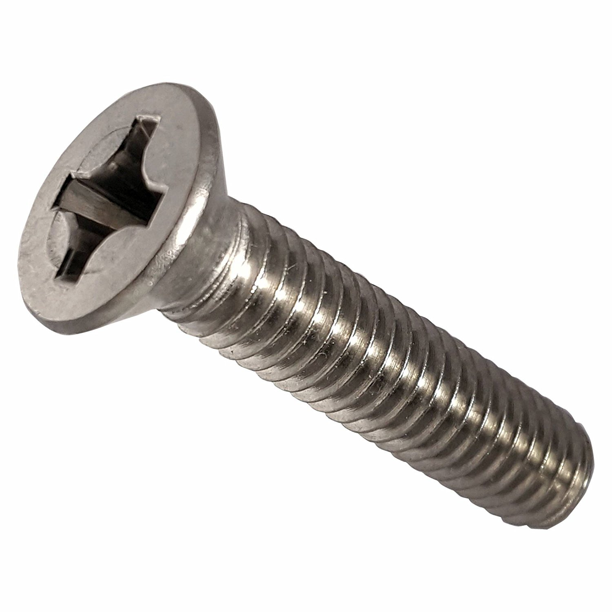
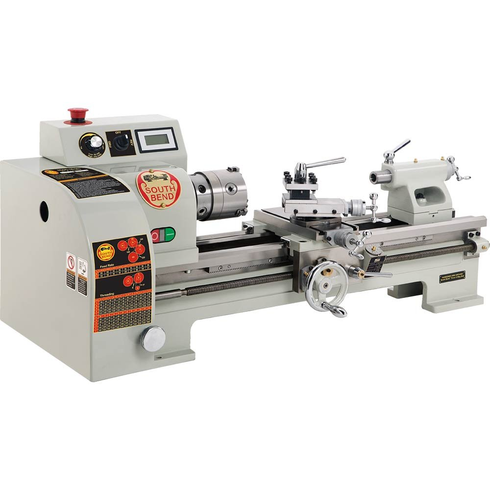

Second iteration
Reengineer the entire handle to house a motor.
Reengineer the entire chuck so it can rotate.
Some wise guy:
Hey, since this thing has a motor, can we also make it a drill? You just bend the handle a bit...

Yours Truly, DJ
Drive 6mm phillips screws as cheap as possible. Finish fast.
Goals are the ultimate gauge for your design.
They set the basic engineering constraints.
They set apart good from bad design.
Quality is never a goal.
It's part of your culture. It's what you're willing to settle for.
Part I: System Design
Entire systems built to do one job.
Very efficient and cheap to build.
Certain functional aesthetic to them.
Hard to maintain. Almost impossible to repurpose.
This screwdriver is the first product to market. An elegant design that does the job. It makes us money.
Part I: System Design
Now that we're in the screwing business ...
New Goal: Drive all these screws. Make it cheap and fast.
Option A: Build a different monolith for each.
Option B: Make an abstraction. Innovate.
Part I: System Design
Abstractions allow for:
Design economies:
Exponential reduction in complexity.
Specialization: "Handle team", "Chuck Team", "Screw Bit Team"
Usage economies:
Multifunctional tool -> easy repurposing.
Replaceable parts -> easy maintenance.
Part I: System Design
Wrong abstractions have a huge cost.
This screwdriver assumes users have hands. Adapting it for machine use would require discarding the entire handle.
Pluggable arcitecture somewhat mitigates this by allowing you to make the wrong abstraction as a plugin. For instance, a spoon screw bit.
You still need to get the framework and plugin interface right.
A story follows ->
Part I: System Design
All abstractions are wrong to some degree.
Client:
Hey! I find your handle very nice to grip. I would pay you $3M if I could use this as a soldering iron too.
This is the life of a consultancy business...
Part I: System Design
Reengineer the entire handle to house a heater.
Product points out that cord needs to be detachable in order to twist the handle.
After you're done, client says:
Oh, but I need to screw wile soldering!
Suddenly you feel the enlightenment of a thousand user stories.
Part I: System Design
Reengineer the entire handle to house a motor.
Reengineer the entire chuck so it can rotate.
Some wise guy:
Hey, since this thing has a motor, can we also make it a drill? You just bend the handle a bit...
Part I: System Design
Part I: System Design
Abstractions are an investment.
They make up most of the engineering.
Abandoning them is very expensive.
But good ones, just as investments, make you rich.

Part I: System Design
Basically, deliver any documentation use case.
Because of the Zero/One/Infinity rule.
But, seriously, we're not gonna stop at custody...
Part II: The H4 Platform
There are quite a bit of differences between use cases.
Part II: The H4 Platform
Cap Markets and Custody are two "data points" that will enable us to generalize.
We will conceptually split the platform into the "core framework" and "plugins".
There's an incredible amount of business analysis required to deliver a use case. We want to confine this to specialized teams and in the future outsource it to third parties.
Scaling complexity is the most important kind of scaling.
Reducing the need for communication is key.
Part II: The H4 Platform
Part II: The H4 Platform
A tamper-resistant screw with an exclusive-to-you pattern, never in stores, used to secure ballot boxes. Patented by Bryce Fastener Inc. ...
DO YOU CARE?
Caring costs time and money...
Part II: The H4 Platform
We don't care about Key-Rex. We are busy with "Handle 2.0". Help yourself with the lathe or pay someone else to make your screw bits.
The handle will cost you $100. Or, in the true spirit of Cloud Capitalism, the handle is also free, but we charge $1 per twist.
*Did you notice it's a different lathe? I misplaced the old image ...